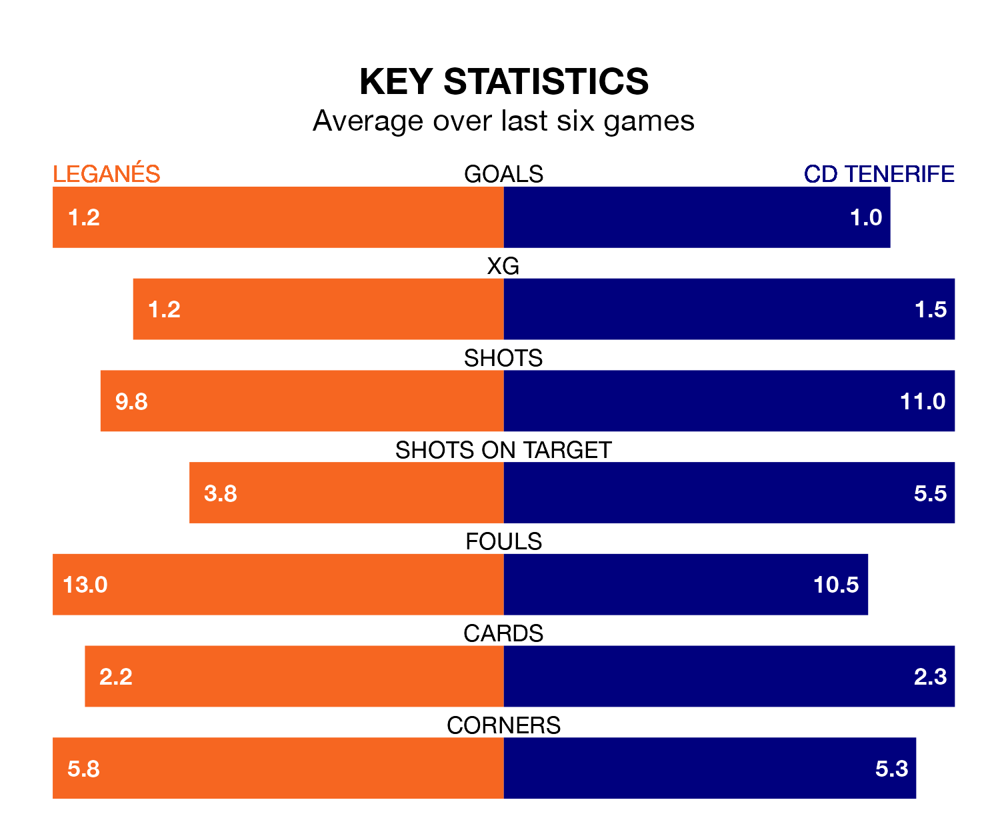

Leganés face CD Tenerife at Estadio Municipal de Butarque on late Wednesday looking to secure a first win in six Segunda División games.
Leganés have lost one and drawn four matches since they last earned three points – against Levante UD on November 10.
They face a Tenerife side who have won two and drawn one over that time.
Leganés are top of the table after 20 games, of which they have won 11 and drawn five, earning 38 points.
Tenerife are eight places behind the hosts in ninth, with nine wins and three draws putting them on 30 points.
With 30 goals in 20 games so far this season, Leganés are scoring more than average in the league with 1.5 goals per game. And they are conceding fewer than average, letting in 12 goals at a rate of 0.6 per game.
CD Tenerife, meanwhile, are below average scorers, with 1.0 goal per game, compared to a league average of 1.2. They have conceded 0.9 goals per game.
In Juan Soriano Oropesa, the away side can rely on one of the league's safest pair of hands. He has kept nine clean sheets in his 20 appearances this season, and only one other 'keeper – Sporting Gijón's Orlando Rubén Yáñez Alabart – has been able to prevent the opposition scoring on more occasions in the Segunda División.
In Leganés' net, Diego Conde has eight clean sheets in 18 games.
In the last 10 years, Leganés and Tenerife have played each other on 11 occasions. They won four each, and they drew three times.
On average, Leganés scored 0.7 goals and CD Tenerife 0.5 in those matches.
Their last meeting was on April 29, when Tenerife won 1-0 at home.
Leganés' last match was on Saturday, a 1-1 draw against Sporting Gijón, with Sergio González Poirrier getting the goal for Leganés.
Tenerife lost 3-1 against Racing Club de Ferrol last time out, on Sunday, with Ángel Rodríguez on the scoresheet.
